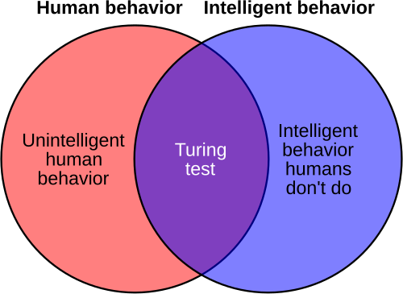

Artificial general intelligence
Artificial general intelligence (AGI) is the hypothetical ability of an intelligent agent to understand or learn any intellectual task that a human being can. It is a primary goal of some artificial intelligence research and a common topic in science fiction and futures studies. AGI is also referred to as strong AI, full AI, or general intelligent action.
Terminology
The term artificial general intelligence was used in 1997 by Mark Gubrud in a discussion of the implications of fully automated military production and operations. A mathematical formalism of AGI named AIXI was proposed in 2000 by Marcus Hutter, who defines intelligence as:
"an agent’s ability to achieve goals or succeed in a wide range of environments".This type of AGI has also been called universal artificial intelligence. The term AGI was re-introduced and popularized by Shane Legg and Ben Goertzel around 2002.
Some academic sources reserve the term "strong AI" for computer programs that will experience sentience or consciousness. In contrast, weak AI (or narrow AI) can solve a specific problem but lacks general cognitive abilities. Some academic sources use "weak AI" to refer more broadly to any programs that neither experience consciousness nor have a mind in the same sense as humans.
Related concepts include artificial superintelligence and transformative AI. An artificial superintelligence (ASI) is a hypothetical type of AGI that is much more generally intelligent than humans, while the notion of transformative AI relates to AI having a large impact on society, for example, similar to the agricultural or industrial revolution.
A framework for classifying AGI was proposed in 2023 by Google DeepMind researchers. They define five performance levels of AGI: emerging, competent, expert, virtuoso, and superhuman. For example, a competent AGI is defined as an AI that outperforms 50% of skilled adults in a wide range of non-physical tasks, and a superhuman AGI (i.e., an artificial superintelligence) is similarly defined but with a threshold of 100%. They consider large language models like ChatGPT or LLaMA 2 to be instances of emerging AGI (comparable to unskilled humans). Regarding the autonomy of AGI and associated risks, they define five levels: tool (fully in human control), consultant, collaborator, expert, and agent (fully autonomous).
Characteristics
There is no single agreed-upon definition of intelligence as applied to computers. Computer scientist John McCarthy wrote in 2007:
"We cannot yet characterize in general what kinds of computational procedures we want to call intelligent."
Intelligence traits
Researchers generally hold that a system is required to do all of the following to be regarded as an AGI:
- reason, use strategy, solve puzzles, and make judgments under uncertainty,
- represent knowledge, including common sense knowledge,
- plan,
- learn,
- communicate in natural language,
- if necessary, integrate these skills in completion of any given goal.
Physical traits
Other capabilities are considered desirable in intelligent systems, as they may affect intelligence or aid in its expression. These include:
- the ability to sense (e.g. see, hear, etc.), and
- the ability to act (e.g. move and manipulate objects, change location to explore, etc.)
Tests for human-level AGI
Several tests meant to confirm human-level AGI have been considered.
The Turing test
The Turing test was proposed by Alan Turing in his 1950 paper "Computing Machinery and Intelligence". This test involves a human judge engaging in natural language conversations with both a human and a machine designed to generate human-like responses. The machine passes the test if it can convince the judge that it is human a significant fraction of the time. Turing proposed this as a practical measure of machine intelligence, focusing on the ability to produce human-like responses rather than on the internal workings of the machine.

History
The idea of intelligent machines has been around for centuries. In the 4th century BCE, Aristotle wrote about the possibility of automata, and in the 13th century, Roger Bacon described a mechanical knight that could perform simple tasks. The term "artificial intelligence" was coined in 1956 by John McCarthy at the Dartmouth Conference, which is considered the birth of AI as a field of study. Early AI research focused on symbolic reasoning and problem-solving, but it faced significant challenges and setbacks in the following decades. Modern AI research began in the mid-1950s.The first generation of AI researchers were convinced that artificial general intelligence was possible and that it would exist in just a few decades.[51] AI pioneer Herbert A. Simon wrote in 1965: "machines will be capable, within twenty years, of doing any work a man can do".Their predictions were the inspiration for Stanley Kubrick and Arthur C. Clarke's fictional character HAL 9000, who embodied what AI researchers believed they could create by the year 2001. AI pioneer Marvin Minsky was a consultant[54] on the project of making HAL 9000 as realistic as possible according to the consensus predictions of the time. He said in 1967, "Within a generation... the problem of creating 'artificial intelligence' will substantially be solved". Several classical AI projects, such as Doug Lenat's Cyc project (that began in 1984), and Allen Newell's Soar project, were directed at AGI.
However, in the early 1970s, it became obvious that researchers had grossly underestimated the difficulty of the project. Funding agencies became skeptical of AGI and put researchers under increasing pressure to produce useful "applied AI".[b] In the early 1980s, Japan's Fifth Generation Computer Project revived interest in AGI, setting out a ten-year timeline that included AGI goals like "carry on a casual conversation". In response to this and the success of expert systems, both industry and government pumped money into the field. However, confidence in AI spectacularly collapsed in the late 1980s, and the goals of the Fifth Generation Computer Project were never fulfilled. For the second time in 20 years, AI researchers who predicted the imminent achievement of AGI had been mistaken. By the 1990s, AI researchers had a reputation for making vain promises. They became reluctant to make predictions at all[c] and avoided mention of "human level" artificial intelligence for fear of being labeled "wild-eyed dreamer[s]".
Applications
AGI has the potential to revolutionize many fields, including healthcare, education, transportation, and scientific research. It could help solve complex problems, automate tasks, and improve decision-making. However, there are also concerns about the risks associated with AGI, such as job displacement, ethical issues, and the potential for misuse. As a result, many researchers advocate for responsible development and regulation of AGI to ensure that its benefits are maximized while minimizing potential harms.